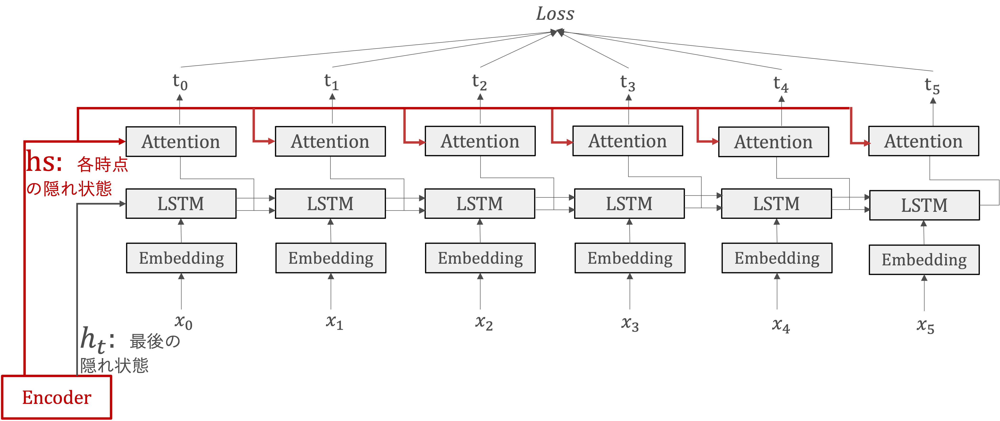

Attention
Contents
Attention#
近年では、BERT、GPTなど大規模言語モデルが目を見張るような成果を出しています。これらの大規模言語モデルでは、基本的にはTransformerというというアーキテクチャが応用されています。
このTransformerアーキテクチャの起源をたどると、2017年にGoogleの研究者たちによって発表された論文「Attention Is All You Need」に行き着きます。このアーキテクチャは、入力された各単語が、他のすべての単語にどの程度「注意」を払うべきかを学習します。これにより、文脈に応じた単語の重要性を柔軟に捉えることができるようになりました。
論文タイトルの通りで、Transformerを理解するためにはAttention機構を理解しなければなりませんので、今回はAttention機構の仕組みについて説明します。
seq2seqの問題点#
今まで説明した通り、seq2seqでは二つのRNNを連結することで、時系列データを別の時系列データに変換させることができました。その変換が、Encoderで「固定長のベクトル」に情報をエンコードし、Decoderに渡すことより実現されています。
しかし、「固定長のベクトル」というところに大きな問題が潜んでいます。固定長ベクトルというのはベクトルの大きさが決まってしまっているということで、入力の大きさに関係なく、常にある一定のサイズのベクトルに変換されます。場合による、長い入力を無理やり「固定長のベクトル」へと押し込むことにより、必要な情報はベクトルからはみだす可能性があります。
実に、seq2seqでは長文、特に学習コーパスの文より長い文に対応することが困難になる場合があり、実際に入力文が長くなるにつれて急速に精度が悪化することが示されました。
Attentionの仕組み#
seq2seqが抱えていた問題を解決することに向けて、認知科学から注意（Attention）という概念からヒントを得られました。
人間の認知モデルにおいて、注意とは「特定の対象に感覚や意識を集中させることで、不必要な情報を排除、必要な情報を選択し、限りある知的資源を効果的に配分するもの」という位置付けになっています。人間が情報を処理する際、特定の物事を注視していた、みたいに「注意」は無意識的に調節されるのが一般的です。
seq2seqは人間と同じように、必要な情報だけ「注意」を向けさせることは、Attention機構の目的になります。
Attention機構の詳細を説明する前に、まず全体の枠組みを示したいと思います。

seq2seqにAttention機構を追加することを考えます。
Atention機構では、EncoderのLSTMライヤの各時点の隠れ状態(\(hs\))を受け取ります。
各時点の隠れ状態(\(hs\))に基づいて、必要な情報を選び出し、それをその先の出力の生成に使います。
Attentionの計算#

Attention Weight#
「注意を向け」という操作を数学的な演算を置き換えると、各単語の重要度を表す「重み」(\(a\))を利用することが考えられます。ここで、\(a\)の各要素は\(0 ~ 1\)のスカラあり、その総和は\(1\)になります。一般的には、Attention Weightと呼ばれます。
Attention Weight計算の流れを見ていきましょう。
QueryとKeyの生成
Key: 注目の対象、ここではエンコーダの各時点の隠れ状態を指す $\( k_i=W_K \cdot h_i, for \ i=1 \ to \ m \)$
Query: 注目したいターゲット、ここではデコーダの現在の隠れ状態を指す $\( q_t = W_Q \cdot s_t \)$
ここで、\(W_K\)と\(W_Q\)は学習する必要があるのパラメーターになります。
DecoderのLSTMレイヤの隠れ状態ベクトルとEncoderの各時点の隠れ状態\(h_t\)とどれだけ”似ているか”を数値で表す際、ベクトルの「内積」が使用されています。
ソフトマックス関数を適用し、すべてのウェイトの合計が1になるように正規化します。
コンテキストベクトル#
各単語の重要度を表す\(a\)と各単語のベクトルから、その重み付き和を求めることで、目的とするコンテキストベクトルを求めます。
ここで、各単語のベクトルはattention機構においてvalueとして定義されています。
Attentionレイヤ付きのseq2seq#
Attentionレイヤ付きのseq2seqモデルにおいて、Attentionレイヤの出力ーコンテキストベクトルーが次時点のLSTMレイヤの入力へと接続されています。 つまり、現在の隠れ状態とコンテキストベクトルを組み合わせて、次の出力トークンを生成します。
そのような構成にすることで、各デコードステップでエンコーダの出力から最も関連する情報が抽出され、それを用いてデコーダが次の出力トークンをより「正確」に生成できます。